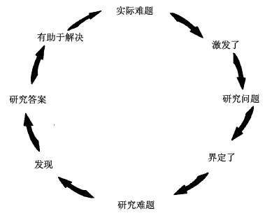

本章我们要说明如何将你的计划形成一个读者想要解决的难题，这对资深的研究者来说是个重要的步骤。如果你正试着进行第一个研究计划，这章对你来说可能会有些难度。（对于难题，你可以在我们第十四章有关“导论”的讨论中找到更多的帮助）。如果你理不出头绪，你可以跳到第五章，但我们期望你能看完这章。你会学到一些现在可以了解，而且未来肯定需要用到的重要步骤。
前一章提到如何从你的兴趣中找到题目，如何缩小这个题目，进而提出问题。建议你可以借着为下面这个三步骤的公式填空，来确认自己研究的问题的重要意义：
1.题目：我正在研究________。
2.问题：因为我想要找出什么（what）/为什么（why）/如何（how）________。
3.重要童义：为了帮助读者了解________。
这些步骤不仅说明了你研究计划的发展，也展现了你作为一个研究者的成长。
当你从步骤一进行到步骤二时，你就不再只是个数据搜集者了，因为你此刻进行的研究并非出于漫无目的的好奇心（不会是一种徒劳的冲动），而是出于某种想更理解特定事物的欲望。步骤二也有助于你与读者间发展出渐趋深厚的关系。当你从步骤二进人到步骤三时，你就会将研究计划聚焦于理解这个特定事物的重要性上面（至少对你而言是重要的）。然而，唯有当你能够从读者的角度认识到这个重要性时，你才能与一个研究团体建立关系。借着最后这个步骤，你的意图会从仅为自己探索和了解特定事物，改变为向别人表明与解说该事物；这个转变为读者提出了更有力的观点，从而与他们建立起更为坚实的关系。
第三个步骤对每个人来说都不容易，即使是资深的研究者也不例外。很多人的写作方式仿佛只是完成自己分内工作般地回答一个自己恰好感兴趣的问题。他们没有理解到：自己的答案同时必须解决一个对其读者团体而言有重要意义的难题。然而，研究者无法在研究计划一开始，就确切知道自己最终将解决的问题。很多人通常是从一个预感或困惑开始，他们只是想更理解特定的事物，直到深入研究，甚至是草拟论文初稿时，他们才弄清楚自己解决了什么样的难题。因此，假如在研究计划初期无法确切知道自己研究问题的重要性，你也不用觉得不自在。然而，你却可以着手规划一个确知（或至少是希望）有个好问题就在某处等着你的研究。
然而，为了了解如何找到这个好问题并传达其重要意义，你得先知道所谓的研究难题到底是什么。
日常的研究通常不是从空想一个题目开始，而是从解决一个碰巧遇到的实际难题（practical problem）开始，而这个难题如果未解决则意味着麻烦。当解决方案尚未明朗之前，你会提出一些问题，希望这些问题的答案有助于解决原先的难题。然而，为了回答这些问题，你必须提出一个其他形式的难题并加以解决，这个难题即所谓的研究难题（research problem）：那些你虽然不知道或不了解的，但你认为在解决实际难题之前必须理解的难题。
人们对处理实际难题的过程并不陌生，典型的例子如下：
实际难题：我的刹车器开始发出尖锐的声音。
研究问题：哪个地方可以马上把刹车器修好呢？
研究难题：从电话簿的工商栏里查询距离最近的刹车器修理厂。
研究答案：修车厂位于东区大学路1号。
应用：打电话询问他们何时可以修理我的刹车器。
这是我们生活层面所常见的模式：
全国来复枪协会要求我反对枪支管制。如果不答应的话，我会落选吗？民调结果显示，我大部分的选民支持枪支管制。那现在决定是否该拒绝全国来复枪协会的要求。
科学园区工厂的成本上升了。什么改变了？比较改变前后的人事弃动情况。发现目前员工变动的比例较高。如果我们能改善培训、鼓舞士气，员工就会有意愿留下。那么，看看我们是否有能力这么做。
诸如此类的难题很少需要我们提供解决方案。只有当我们必须说服别人，使他们相信我们已解决他们的重要难题的时候，我们才会将解决方案写出来：
科学园区工厂的经理：
园区的成本上升是因为员工过于频繁的变动。员工在工作中看不到他们的未来，在几个月内便离职了。为了留住员工，我们必须提升他们的技能，他们才愿意留下。以下是一项解决方案……
但在任何人能够解决成本上升的实际难题之前，有人必须提出一个就“不知成本为什么上升”而言的研究难题并加以解决。如此一来，他们才能决定该做什么。
实际难题和研究难题之间的关系，如图所示：

解决实际难题时，通常我们也解决研究难题，但解决及陈述这两种难题的方式不同，因此，对二者的区别十分重要。
虽然研究难题经常起于实际难题，你却无法因为解决了研究难题而解决实际难题。科学园区工厂的经理也许知道“为什么成本会增加”这个研究问题的答案，但对“我们如何改进培训”这类实际难题可能百思不得其解。
因此，难题一词在研究领域里有其特殊意义，这个意义有时会让研究新手感到困惑。在日常生活的领域里，我们对实际难题往往是避而不谈。但在学术领域里，研究者却要致力于找出、甚至构想一个研究难题（如果必须这么做的话）。事实上，一个研究者如果没有好的研究难题，就真的是个棘手的实际难题了，因为如果没有研究难题作为研究的对象，就没什么研究可以做的了。
研究难题让研究新手感到困惑的第二个原因是：没有经验的研究者有时对研究难题这个概念会感到棘手。有经验的研究者常以简略的方式谈论其研究难题。当被问起正在着手进行什么研究时，他们的回答听起来就像我们在前一章提醒你的那些一般性题目一样：成人麻疹、早期阿兹特克人的瓮、怀俄明州马鹿的求偶方式等。
因此，有些初学者便认为找到有相关资料可以阅读的题目，就等同于有了一个待解决的研究难题。但当他们真的这么想时，就会遇到一个严重的实际难题，因为如果无研究难题，便缺少一个为了答复特定问题的需要而设定的焦点。他们因而漫无目的且无止境地搜集资料，并无法知道要多少资料才够。接着，他们在决定取舍报告中的数据时感到困惑，以至于最后为了安全起见，就把找到的所有数据全部放进去。所以，这些研究者会因读者说 “我看不到它的重要意义”、 “这只是一堆数据而已” 而感到挫折也就不足为奇了。为了避免这类评价的产生，你必须先有个难题，然后才能将注意力放在有助于解决难题的特定资料上。这意味着首先得了解难题如何运作。
实际难题和研究难题有相同的基本结构，它包括两个组成部分：
这两者的不同之处，即在于那些情境的性质与损失。
爆胎是个典型的实际难题，因为它是（1）在这个世界中会发生的情况（车胎扁掉），（2）强加给你一个你不想承担的具体损失（无法准时上班或错过了晚餐约会）。然而，假如你是被迫赴约而且期望另有去处，那么在这种情况下，爆胎便没有明显的损失。事实上，由于它已变成一种收益，所以它完全不算是个难题，反而成了解决方案，因为没有损失就没有难题。
一个实际上的、具体的难题的情况可以是任何事情，甚至是彩票中奖。假如你中了一百万，但欠高利贷者两百万，而报纸却将你的名字刊登出来。高利贷者看到了你的大名，不但拿走了你的一百万还打断了你的腿。在这种情况下，中了一百万元反而成了一个大麻烦。
要提出一个实际难题，你得同时说明它的两个组成部分：
·它的情境
我错过了公交车
臭氧层的破洞正逐渐扩大
·该情况导致的损失令你（或他人）不悦
我上班会迟到，且可能会去掉工作
许多人将会死于皮趺癌
但是，现在必须注意的是：读者会根据这个难题对他们（而不是对你）造成的损失来判断其重要性。所以你必须试着从读者的观点来构想你的难题。怎么做呢？想象当你提出难题的情境时，读者的回应是“那又怎样”，例如：
臭氧层的破洞在去年扩大了。
那又怎样？
你用该难题造成的损失来回答：
臭氧层中一个更大的破洞表示：有更多的紫外线会侵袭地球。
假如这个人又问：“那又怎样?”那么你可以用更进一步的损失来回答：
过多的紫外线会导致人类罹患皮趺癌。
如果读者再度质疑（虽然未必会发生）:“那又怎样？”那么你就无法说服他相信这既是你的难题，也是他的难题。
我们承认：只有当我们不再说“那又怎样”，而改说“哦不！ 那我们怎么办才好呢”时，一个难题才会存在。
像癌症之类的实际难题，由于具有显而易见的后果，所以很容易掌握。然而在学术领域里，比较可能处理的是研究难题，因为其情况和损失通常比较抽象，所以比较难以掌握。
实际难题和研究难题具有相同的结构，但其情境与损失却有重大的差异：
你可以借由填写第三章的公式来确认难题的情况。第二个步骤是陈述你不知道或不了解的地方：
我正在研读亚拉莫的故事，因为我想要了解为何选民以符合得克萨斯州当地政客利益的各种方式来对这些故事作出回应。
这就是为何我们要强调研究问题的价值。这些问题迫使你去思考你不知道或不了解，但却想要知道或了解的。
你可在我们公式的第三个步骤中明确指出这些重要后果。
我正在研读亚拉莫的故事，因为我想了解为何选民以符合得克萨斯州当地政客利益的各种方式来对这些故事作出回应，从而帮助读者了解区域的自我形象如何影响国家政策。
这看起来可能会让人感到困惑，但事实上比表面上看到的还要简单。当你从问题转向难题时，你只是把为你自己找出问题的意义，转变为找出问题对你的读者有何意义。
它是这样运作的：一个研究难题的第一个组成部分，是你不知道但想知道的某些事物。你可以用直接问句来加以表达：
天空中有多少颗星星？
过去十五年来，爱情电影有怎样的改变？
现在假想有个人问你：“如果你无法回答这个问题，那又怎样?”你怎么回答？你可以这样回答——陈述其他你不知道的事物，直到你解答第一个问题，即其他人应该也想知道的问题时为止。例如：
假如我们无法回答过去五十年来爱情电影如何改变，（情境/第一个问题）那么我们就无法回答一个更重要的问题：我们的文化对浪漫爱情的描绘如何改变？（重要后果/更大且更重要的问题）
假如你认为回答第二个问题非常重要，那么你便已经提出了一个值得解决的研究难题，而假如读者与你想的一样，那么你就做得不错了。
但或许还会有读者再问：“那又怎样？”
假如我不知道我们的文化对浪漫爱情的描绘是否有改变，那又怎样？
那么你就得提出一个更大的问题，而该问题的答案须根据前一个问题的答案而定；这个答案对读者而言必须具有更重要的意义。
假如无法回答过去五十年来我们的文化对浪漫爱情的描绘如何改变，（第二个问题）那么我们就无法回答一个更重要的问题：我们的文化如何影响年轻男女对婚姻及家庭的期望？（重要后果/更大、更重要的问题）
假如你想象读者再问：“那又怎样？”你可能会想：真是对牛弹琴。但假如这便是你必须面对的读者，那你得再试一次。
对学术领域的圈外人而言，研究者提出的问题有时似乎非常狭隘，以至于他们会觉得太过琐碎：如果我们不知道跳房子游戏的起源， 那又怎样？然而，对于少数关心民俗游戏如何影响儿童社会发展的人来说，不知道答案是什么的损失便是这个研究的理由。你的意思是什么？ 假如我们可以发现儿童的民俗游戏是如何产生的， 我们就可以知道儿童如何使自己社会化……
当一个研究难题的解决方案对世上的实际难题没有明显的实用性，而只和研究者团体的学术兴趣有关时，我们就称此为纯理论研究（pure research）。而当一个研究难题的解决方案的确具有实际上的重要效果时，我们称此为应用研究（applied research）。
通过检验研究计划三个步骤中的最后一个步骤，你可以辨别研究是“纯理论的”或“应用的”，有关“知”或“行”的（knowing or doing）。
这是个纯理论的研究难题，因为步骤三仅涉及理解（understanding）。
在一个应用性的研究难题中，步骤二也涉及“知”的部分，但第三个步骤则涉及“行”的问题：
这是个应用性的难题，因为天文学家理解大气层使测量失真的程度后，才能进行他们需要做的事情：更准确地测量光线。
有些缺少经验的研究者对纯理论研究感到不自在，因为纯理论研究的损失——仅仅是不知道什么——是如此地抽象。由于他们尚未成为关心该问题答案的团体的一分子，所以他们会认为自己的研究发现没什么作用。于是他们试着将某种实际损失拉到概念性的研究问题上，使之看起来具有明显的重要意义：
大部分读者可能觉得这样的联系有些牵强。
要拟订实际的应用性研究问题，你必须表明：第二个步骤的答案可能通往第三个步骤。问自己这样的问题：
（a）读者是否想要达到________的目标，（陈述你第三个步骤的目标）
（b）他们是否认为最好的方式就是找出________？(你在第二个步骤陈述的问题）
试着用那个应用性的天文学难题来检验：
（a）读者是否想利用地表望远镜所得到的数据，更准确地测量电磁輻射的密度，
（b）他们是否认为最好的方式就是找出大气层在多大程度上使这些测量失真？
因为天文学家已经从地表望远镜得到了许多可据以校正大气层干扰程度的数据，因此答案看起来好像是肯定的。
现在试着用亚拉莫难题来检验：
（a）读者是否想要达到帮人民保护自己免受无耻政客所害的目标？
（b）他们是否认为最好的方式就是找出19世纪的政客如何运用重大事件的故事来影响公共舆论呢？
感觉还是有点牵强。
假如你真的认为自己研究难题的答案可以应用于实际难题，那就用纯理论研究难题的方式来拟订你的难题，接着加上你的应用作为第四个步骤：
当你在导论中陈述难题时，最好是将其拟成一个纯概念性的研究难题，而该难题的重要意义来自其概念性的重要后果。除非你的作业有包括实际应用的问题，否则将其留到结论（有关导论与结论的更多说明，详见第十四章）。
有许多人文科学、自然科学和社会科学的研究计划并未直接应用于日常生活。事实上，正如纯理论一词所表明的，许多研究者对纯理论研究的重视程度更大于其应用。他们相信为了知识的目的而追求知识反映了人类的最高天职——知道更多、了解更多，但这并非出于追求金钱或权力的动机，而是出于理解本身所带来的好处。你可能已经猜到，我们三个作者都同样支持纯理论研究与实用性的研究：只要研究做得好，而且并未受到任何不诚实或恶意动机所玷污。
如今纯理论研究及应用研究的一个威胁是可以带来利益的专利，特别是在生物科学领域里。对利益的追求不仅决定了研究难题的选择，更影响了这些难题的解决方案：
吿诉我们你在找什么， 我们能为你提供答案！ 这涉及我们将在后面讨论的伦理问题。
一个初学者所犯的典型错误
有些初学者，尤其是那些研究重大实际难题的初学者，即便这些难题具显而易见的实用性，他们也从不认为研究难题具有实际价值，因此他们试图强行将计划转入实际领域。这通常是个错误，没有人能用5页、甚至是50页的论文来解决世界上的重大难题。一个好的研究者应该能帮我们更了解这些难题，让我们更接近某个解决方案。假如你相当在乎一个实际难题（像美国西部发生越来越多破坏力强的森林火灾），并将其构思成一你能回答的研究问题，它最终可能有助于产生一个实际的解决方案：
火灾对于森林生态的健全性有多重要？地方的防火规章如何影响建筑物受火灾损害的程度？
在这些小问题里选一个，要知道小问题的小答案有时会通向伟大的解决方案。
优秀的研究者与我们的不同之处在于他们才华横溢、技巧熟练，或只是幸运地找到了一个难题，而他们对难题的解决方案让我们以一种新的方式来看待这个世界。我们都能学会如何辨认出一个好的难题，不论是我们碰上它，或者被它碰上了（或者它早就是个被广泛讨论的议题）。但是，通常研究者在开始时，并非完全清楚自己的研究难题。有时他们只希望将其界定得更清楚而已。事实上，找出一个新难题或努力厘清旧难题的人，通常可以比那些解决一个早已被界定为难题的人贏得更多的声誉与（有时候）财富。有些研究者甚至因为对似乎可信的假设提出了反证（disprove）而获得赞赏，而该假设正是他们原本想证实的。所以不要因为在开始研究之际无法完全拟订难题而感到气馁。这只有少数人可以做得到。但尽早思考这个问题将会让你事半功倍，甚至避免在朝向这个目标时产生恐慌。
这里有几个方法，可以让你在研究初始便能以一个难题为目标。
仿效资深研究者的做法：跟老师、同学、亲戚、朋友或邻居——任何对你的题目与问题可能感兴趣的人——谈谈。为什么会有人需要你对问题的解答？知道答案后，他们会如何做？你的答案可能会引发哪些问题？
如果你能自由挑选自己的难题，那么就找个属于某个大难题一部分的小难题。虽然你不大可能解决那个大难题，但你处理的这个部分将承续它的某些重要性。（你也将从中教导自己，更理解你研究领域中的难题，并因而受益良多。）请教你的老师他正在做什么，并询问你是否可以处理其中的一部分。但是要注意：如果你的老师帮你界定了难题，并给你寻找原始资料的提示，不要让这些建议局限了你的研究。老师感到最沮丧的事莫过于学生仅仅执行被建议去做的工作。如果是这样的话，老师会希望你做一些能帮他找出他不知道或不了解的事物的研究，比方说较佳的原始资料与新的数据。
如果你批判地阅读，便能找到一个研究难题。当你阅读一份原始资料时，你会在哪里发现矛盾、不一致、不完整的解释？如果你对某个解释不满意、某些东西好像古怪、不清楚或者不完整，就暂时假如其他读者的感受可能和你一样。许多研究计划起源于研究者与另一篇研究报告的作者之间一场想象中的对谈：等一下， 他正忽略了……
当你去更正一个脱漏、错误、或是误解之前，要确定这些缺失是真实的，而不是出于你的误读。小心而不带偏见地重新阅读你的原始资料。无数的研究报告都以反驳某个从未有人提出的论点为目标。
当你认为自己发现了真正的谜题或错误时，不要仅仅只是提出来而已。如果某个原始资料说是X而你却认为是Y，当你能够证明那些继续相信X的人会对某些更重要的事情产生误解时，你才会得到一个研究难题。
最后，严谨地阅读你的原始资料的最后几页。那是许多研究者提出更多有待解答问题的地方。下面这段引文的作者刚解释完19世纪俄国农民的日常生活如何影响他在战场上的表现：
就像士兵在和平时期的经验会影响他的战场表现一样，军官团的经验一定也会影响军官的表现。日俄战争后，有些评论家将俄国战败归咎于军官在经济庶务期间养成的各种习惯。不管怎样，要理解俄国帝制时期军官在和平与战争期间的服役习惯，我们需要对军官团进行一种结构性的——如果你愿意的话，一种人类学的——分析，就像我在此对应召入伍者做的。（我们的强调）
最后一句所要传达给我们的，既是作者要解决的难题，也是有待人们处理的一个新难题。
在写作草稿的初期阶段，批判性的阅读有助于你发现好的研究难题。
作者几乎总是在草稿的最后几页才展现他们最好的思考。经常只有在那个时候，他们才开始拟出一个刚开始时想都想不到的最后观点。
如果在初期草稿里，获得始料未及的观点，问自己这个观点可以回答什么问题。你可以为一个还未提出的难题找出解决方案？这听起来很矛盾。你的任务是弄清楚难题是什么。你很有可能可以拟出一个比先前开始研究时更好、更有趣的难题。
你的老师不会设想你是个熟练的研究者，但是会期望你开始发展及练习熟练研究者的思维习惯。他们希望你不只是积累和汇报与你恰好感兴趣的题目相关的事实。他们要你拟出一个你认为值得回答的问题，并提出一个你认为值得解决的难题，不论其他人认为值不值得。
然而，当你最终迈人更高级的研究工作后，必须与别人分享你的新知识与新理解。届时，你得理解读者认为有趣的问题和难题，就如同我们强调过的那样，他们判断的根据是基于他们不知道或不理解某事而承受的损失。我们所进行的步骤不仅是找出读者想看到被解决的难题，更要说服他们严肃地思考他们未曾想过的难题。
没有人第一次就能同时处理这三个步骤。我们几乎只能想到第一个步骤：我有兴趣发现的是什么？我们大部分的人会走到第二个步骤：读者可能对什么感兴趣？ 只有少数人会推进至第三个步骤：我如何让他们了解他们所问的是错误的问题？ 我们如果未达到第三个步骤也未必就是失败，因为我们可从读者对我们回答他们早就关心的难题满意与否，来衡量我们的成果。从读者得到最糟糕的回应，不是“我不同意”而是“我不在乎”。
谈到现在为止，皆为学术研究的纸上谈兵，似乎与许多人努力让自己出人头地或将其他人踩在脚下的实际世界连不起来。但是当世上的研究难题被诚实地处理时，它们在现实世界与在学术领域的组成结构是完全一样的。
在企业与政府里、在法律与医学中、在政治与国际外交上，最有价值的技巧莫过于找出其他人都应严肃看待的难题，并以一种说服他人去关心的方式将其表达出来。如果你在中国历史的课堂上可以做到这样，你在街道上或香港的企业或政府办公室里也可以办得到。
当你不同意某个原始资料时，你便见识到了最常见的一种研究难题。我们无法告诉你与他们的分歧之处为何，但我们可以列出一些标准的矛盾。假如你熟悉某个领域的研究，这份清单将会非常实用。但假如你是初学者，则该列表可以告诉你资深研究者所寻找的矛盾种类。第十四章会说明如何运用这些矛盾，来写出一个可以激发读者继续阅读的导论。（这份清单并非无所不包，而且某些种类有重叠之处。你也可以将其在你的题目上进行尝试。）
原始资料认为某事物属于（或不属于）某个类别，但你并不以为然。
某些宗教团体因为他们的奇特信仰而普遍被视为“异端”，（原始资料的观点）但那些信仰在本质上与一般宗教并没有不同。（你的观点）
在下面的框架里，试着将X或Y改换为你自己的条目。在每一种情况下，你也可以提出相反的情况（亦即，虽然X看起来似乎不是一个Y，但它的确是。）
你认为原始资料弄错了某事物组成部分之间的关系。
近年来，有些人认为体育在教育中没有分量，（原始资料的观点）但实际上，对一个完整的教育来说，体育是不可或缺的一部分。（你的观点）
你主张原始资料弄错了你研究对象的起源、发展或历史。
虽然近来有些人认为世界人口正在增加，（原始资料的观点）但实际情况并非如此。（你的观点）
你可以认为原始资料假定的因果关系并不存在，或者原始资料假如不存在的因果关系其实存在。
一个用来防止青少年犯罪的新方法是“战斗营”概念,（原始资料的观点）但有证据显示，它的效果并不明显。（你的观点）
这类矛盾比较抽象。前面提到的大多数矛盾并未改变讨论的情境。但在角度的矛盾上，作者建议大家以一种新的方式来看待事物。
人们一般都认为广告最多只具有某种纯经济的功能，（原始资料的观点）但事实上，广告也是一个新艺术形式与风格的实验室。（你的现点）